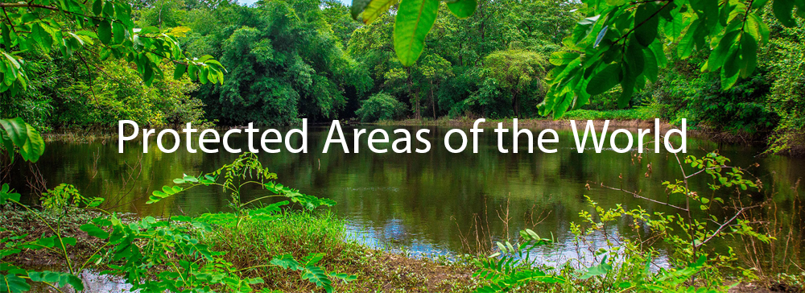

Websites About Protected Areas
insertpara
Below are some websites that further explore protected areas around the globe and in Canada, providing context on their importance as well as the strategies employed to make them work!:
Top 10 Reasons for Having Protected Areas (Via. Ontario Nature)
Information Regarding Effective Protected Areas (Via. IUCN.org)
link text
link text
link text
link text